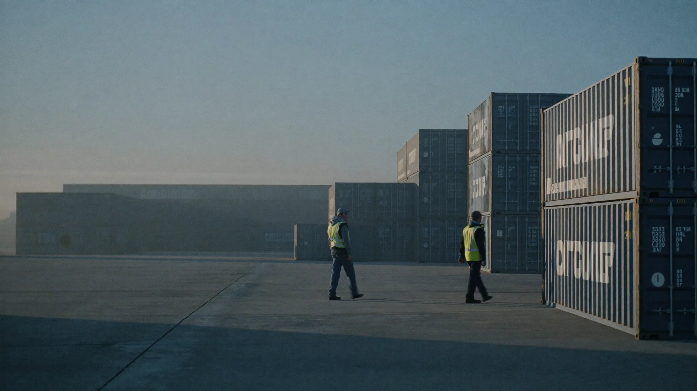

0h
Median time to dispatch
From first call to a crew rolling toward your terminal, measured across every lane we run.
AI-driven dispatch. Verified crews. We keep trucks rolling and docks turning when volume spikes and schedules cannot slip.
One request opens the lane. Your load count, equipment, and dock windows route straight to verified crews. No brokers, no phone trees, wheels turning in hours.
Every driver and dock hand arrives pre-cleared. Licenses, endorsements, insurance, and site badging are verified before anyone is offered to your board.
Our engine matches crews by lane history, equipment, and tempo, not by who happens to be free. The right people reach the right dock the first time.
Live tracking through the last mile. We watch every relay in real time, so night shifts stay covered and hand-offs never slip.
From first call to a crew rolling toward your terminal, measured across every lane we run.
Verified crews and live relay tracking keep loads inside the dock window they were promised.
A standing network, cleared and rated on real performance, ready before the surge hits.
Coverage across ports, rail ramps, and regional corridors, expanding on demand.

Modeled on port-terminal operations, our process enforces badge compliance, protected dock windows, and zero-error hand-offs, on every site we serve.
Explore Our LanesAt the speed of your schedule. Our platform maintains a standing network of verified drivers and dock crews, which removes the days lost to broker chains. One request activates dispatch, and precision-matched crews are rolling in hours.
With a zero-fail clearance model. Before anyone is offered to your board, the system verifies licenses, endorsements, insurance, drug screening, and site-specific badging. Anyone not fully cleared never reaches your gate.
We manage the last mile of every relay in real time. If a hand-off drifts, coordination is live around the clock, and replacement capacity is dispatched before the dock window closes.
Brokers are reactive. Linehaul is an operations engine. Instead of calling around for whoever is free, we deploy proven crews matched by lane history and equipment, engineered for high-tempo, critical-path freight.